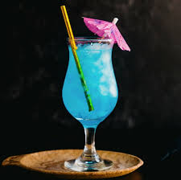

The Blue Lagoon
The Blue Lagoon is a cocktail known for its vibrant blue color and refreshing taste. Its history is not as extensively documented as some other cocktails, but it has gained popularity over the years as a fun and visually appealing drink. Here's an overview of its history:
Origin: The exact origin of the Blue Lagoon cocktail is somewhat uncertain, but it is believed to have emerged in the late 20th century, likely during the cocktail renaissance of the 1970s and 1980s. Like many cocktails, its creation is often attributed to a bartender's experimentation with ingredients to create a new and appealing drink.
Popularity: The Blue Lagoon gained popularity particularly in the 1980s and 1990s, becoming a staple in bars and nightclubs around the world. Its striking blue color and tropical flavor made it a popular choice for parties, beach bars, and themed events.
Ingredients: The classic Blue Lagoon cocktail typically consists of vodka, blue curaçao (an orange-flavored liqueur dyed blue), and lemonade or lemon-lime soda. The combination of these ingredients creates the cocktail's signature blue color, reminiscent of tropical waters.
Variations: As with many cocktails, there are numerous variations of the Blue Lagoon recipe. Some bartenders may add additional ingredients such as pineapple juice, lime juice, or simple syrup to adjust the sweetness or flavor profile of the drink. Others may substitute different spirits or liqueurs to create unique twists on the classic recipe.
Cultural References: The Blue Lagoon cocktail has made appearances in popular culture, including in movies, television shows, and literature. Its association with tropical beaches and vibrant colors often evokes images of exotic destinations and carefree relaxation.
Continued Popularity: Despite its origins dating back several decades, the Blue Lagoon remains a popular choice among cocktail enthusiasts and partygoers. Its visually striking appearance and refreshing taste make it a favorite for special occasions, beach vacations, and summer gatherings.
Overall, the Blue Lagoon has earned its place as a classic cocktail, appreciated for its simplicity, aesthetic appeal, and tropical flair. While its exact origins may be shrouded in mystery, its enduring popularity ensures that it will continue to be enjoyed by cocktail lovers for years to come.
The Recipie
Ingredients:
- 1 1/2 ounces (45 ml) vodka
- 1/2 ounce (15 ml) blue curaçao
- 1/2 ounce (15 ml) freshly squeezed lemon juice
- 13 ounces (90 ml) lemon-lime soda or lemonade
- Ice cubes
- Lemon wheel or wedge, for garnish (optional)
- Maraschino cherry, for garnish (optional)
Instructions:
- Chill the Glass: Start by chilling a highball glass. You can do this by placing it in the freezer for a few minutes before you start making the cocktail.
- Prepare Your Ingredients: Measure out the vodka, blue curaçao, freshly squeezed lemon juice, and lemon-lime soda using a jigger or a measuring cup.
- Fill the Glass with Ice: Fill the chilled highball glass with ice cubes. This will help keep the cocktail cold and dilute it slightly for a smoother taste.
- Add the Ingredients: Pour the measured vodka, blue curaçao, and lemon juice directly into the glass over the ice.
- Top with Soda: Top up the glass with lemon-lime soda or lemonade. You can adjust the amount to your taste preferences, adding more or less soda as desired.
- Stir Gently: Use a cocktail stirrer or a long-handled spoon to gently stir the ingredients together. This will ensure that the flavors are well combined.
- Garnish: If desired, garnish the Blue Lagoon cocktail with a lemon wheel or wedge for a pop of color and a hint of citrus aroma. You can also add a maraschino cherry for an extra decorative touch.
- Serve and Enjoy: Your Blue Lagoon cocktail is now ready to be served! Enjoy it straight away while it's still cold and refreshing.